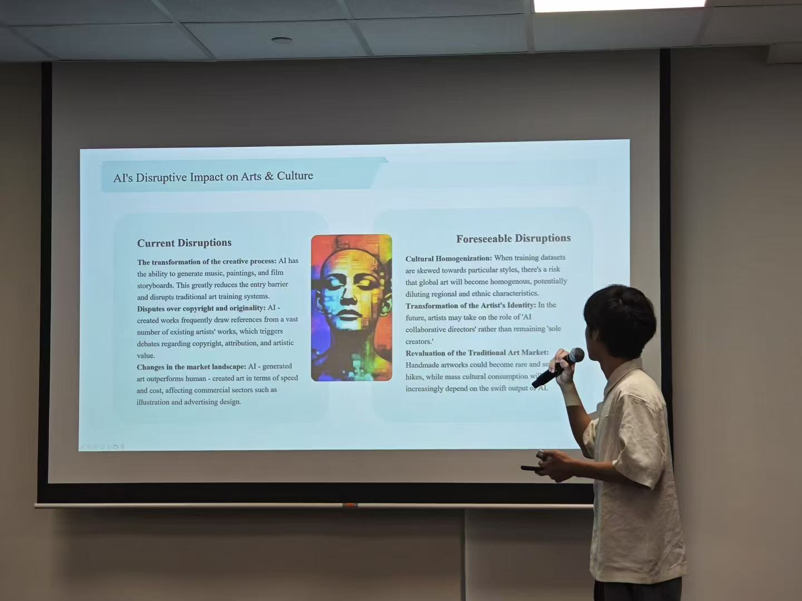

任天乐
Robot Learning & Embodied AI
Building intelligent robotic systems that perceive, reason, and act — from simulation to the real world. Passionate about VLA, imitation learning, and bridging the sim-to-real gap.
📍 Shenzhen, Guangdong, China
I'm an undergraduate researcher in Electronic Information Engineering at Shenzhen University, with a conditional offer for graduate studies at National University of Singapore (NUS). My work focuses on embodied AI, robot learning, and vision-language-action (VLA) models — building systems that let robots understand natural language, perceive their environment, and execute dexterous manipulation.
I have hands-on experience with the full robotics stack: from simulation in Isaac Lab and real-world teleoperation to imitation learning with ACT/Diffusion Policy and RL with PPO. I enjoy tackling the sim-to-real transfer problem and making robots robust in unstructured environments.
Available for internship starting June / July 2026 — on-site or remote. Let's build the future of intelligent robotics together.
Let's TalkTechnologies and frameworks I use to bring robotic intelligence from simulation to the real world.
A selection of my work in embodied AI, robotic manipulation, and vision-language-action systems. Click any card for full details.
My journey in electronic engineering and intelligent systems.
Shenzhen University
GPA: 3.79 / 4.5 (85.2 / 100)
Relevant Coursework: Machine Learning, Optimization, Digital Signal Processing, Circuit Analysis, C++ Programming
National University of Singapore (NUS)
Conditional offer for graduate studies in a related field. Building on my foundation in machine learning, robotics, and intelligent systems.
Recognition from national-level competitions in AI, embedded systems, and hardware design. Click for details.
🎓 Class Leader: Serving as class monitor (班长), coordinating class activities, organizing evaluation materials, and liaising with university-level review committees.
🏀 Sports: Member of the university basketball team, competing in the "President's Cup" (校长杯).
🎹 Interests: Embodied AI, AI chips & hardware, robotics, PCB design, basketball, and piano.
💼 Internship: Available from June / July 2026. Open to both on-site and remote positions.
I'm always open to research collaborations, internship opportunities, and conversations about embodied AI.
Whether you have a project idea, an internship opportunity, or just want to connect about robotics — I'd love to hear from you.
tianle66666@gmail.com📍 Shenzhen, China · Available for on-site or remote